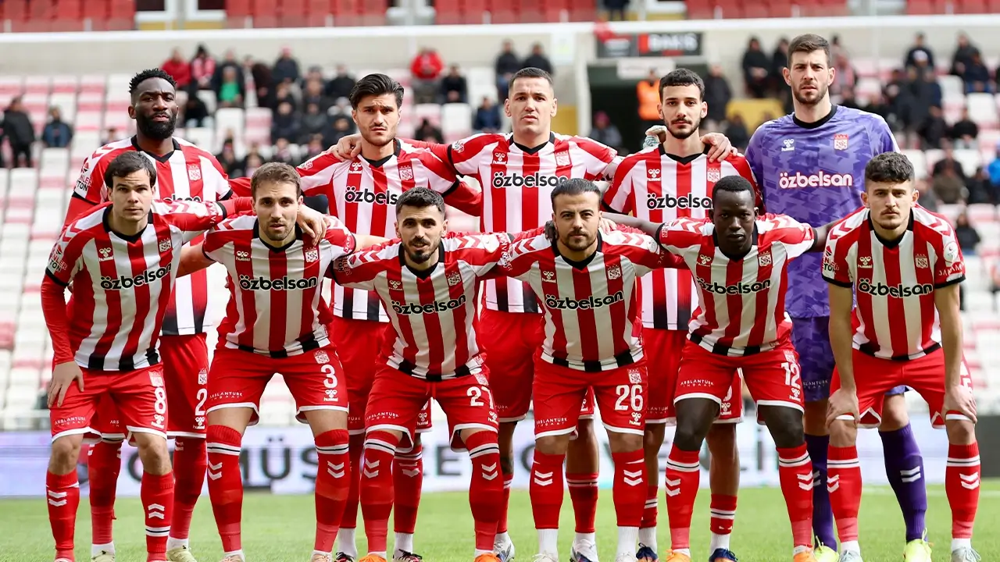
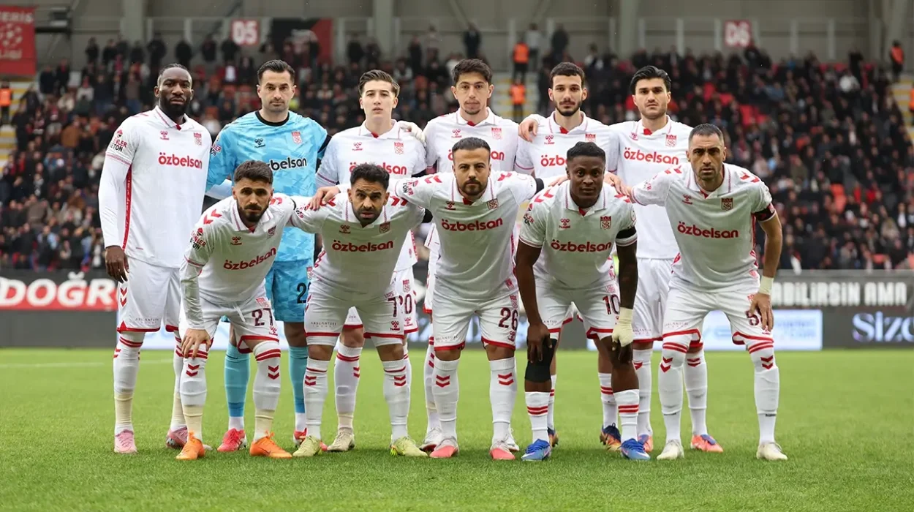
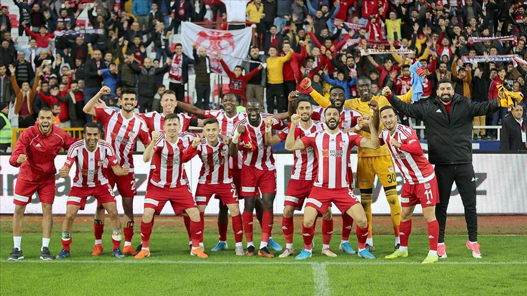
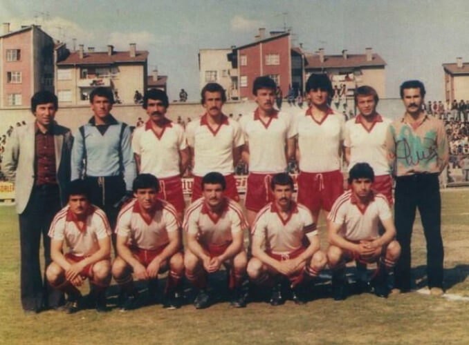

Sivasspor Futbol Takımı
Takım Hakkında
Bu sayfada şehrimizin önemli spor takımlarından biri olan Sivasspor Futbol Takımı hakkında bilgiler yer almaktadır.
Sivasspor Futbol Takımı; 9 Mayıs 1967'de Sivas Gençlik, Yolspor ve Kızılırmak kulüplerinin birleşmesiyle kurulmuştur.
Armada bulunan 3 yıldız, kurucu kulüpler olan Yolspor, Kızılırmak ve Sivas Gençlik 'i temsil etmektedir.
Genel Bilgiler
Kuruluş
- 9 Mayıs 1967
Takım Renkleri
- Kırmızı - Beyaz
Stadyum
- Yeni 4 Eylül Stadyumu
Başarılar
- Sivasspor, 2004-2005 sezonunda büyük bir başarı göstererek Turkcell Süper Lig’e yükseldi. İlk iki sezonunda ligi 8. sırada tamamladı.
- 2007-2008 sezonunda Sivasspor şampiyonluğu kıl payı kaçırdı, sezonu averajla Beşiktaş ve Fenerbahçe’nin gerisinde 4. sırada bitirdi ve UEFA Intertoto Kupası’nda Türkiye’yi temsil etme hakkı elde etti.
- Sivasspor, bir önceki sezondaki çıkışını sürdürerek 2008-2009 sezonunu 66 puanla lig ikincisi olarak tamamladı. Bu başarı kırmızı-beyazlılara UEFA Şampiyonlar Ligi’ne katılma hakkı getirdi.
- Sivasspor, Süper Lig’de aralıksız 11 sezon mücadele ettikten sonra 2015-2016 sezonunda TFF 1. Lig’e düştü.
- Bir sezon sonra toparlanarak 2017-2018 sezonunda TFF 1. Lig’i şampiyon olarak tamamladı ve yeniden Süper Lig’e yükseldi.
- Sivasspor, 2024-2025 sezonunda Süper Lig'den düşmesinin ardından şu anda (2025-2026 sezonu) Trendyol 1. Lig'de mücadele etmektedir.
- 30 Nisan 2026 itibarıyla ligin sonlarına yaklaşılırken Sivasspor, orta sıralarda (9-10. sıra civarı) yer alıyor.
Takım Görselleri



